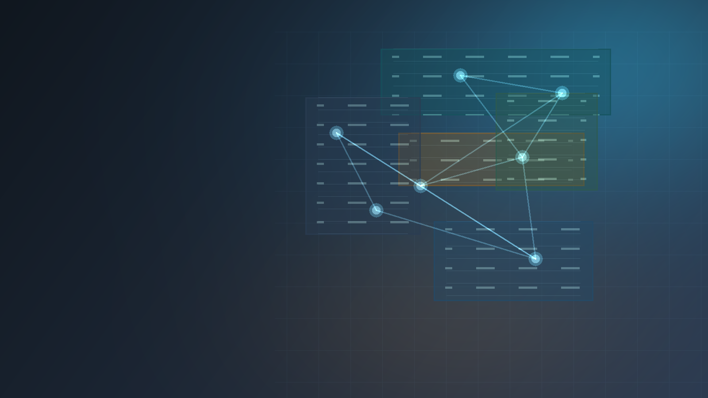

RAG Platform
AI KnowledgeOps Platform
Production-style retrieval platform for internal knowledge bases, built around idempotent ingestion, leased embedding jobs, metadata-filtered retrieval, and grounded citation responses.
Overview
A retrieval backend that refuses unsupported answers.
Problem
Teams spread operational knowledge across documents, tickets, runbooks, and internal tools. Plain search returns files, while naive chat over documents can invent unsupported answers.
Implemented
- FastAPI document ingestion and chunk persistence
- Embedding job records with worker leases and retry state
- Deterministic local embedding provider for CI-safe tests
- Metadata-filtered cosine retrieval with ranked citations
System Snapshot
Ingestion, indexing, and retrieval stay explicit.
Engineering Signals
What this repo demonstrates.
Reliability
Idempotent ingestion, durable job state, bounded worker batches, and stale lease recovery.
AI Boundaries
Retrieval is citation-first and intentionally avoids LLM synthesis until evidence constraints exist.
Testing
Focused pytest coverage across ingestion, chunking, worker behavior, retrieval, and API contracts.